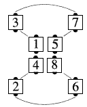
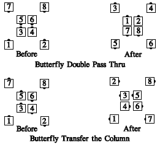

A butterfly is a column formation with the ends of the column separated by 2 positions.
Butterfly Circulate
From a butterfly: All dancers move
forward one position along the path below:

Other Butterfly calls, such as Split Circulate, Walk and Dodge
Any call which can be done from parallel general
columns (columns, double pass thru, etc.), and which ends
in general lines or columns, can be done from a butterfly.
The dancers act as though the ends were close together;
however, they end on the original 8 spots on the floor. For
example, "Butterfly Double Pass Thru":

The ending formation is always the same as though the ends stepped together, everyone did the call, and the ends slid apart again--the same eight spots on the floor are occupied at the end of the call as when it began.
© Copyright 1983, 1986-1988, 1995-2017 Bill Davis, John Sybalsky and CALLERLAB Inc., The International Association of Square Dance Callers. Permission to reprint, republish, and create derivative works without royalty is hereby granted, provided this notice appears. Publication on the Internet of derivative works without royalty is hereby granted provided this notice appears. Permission to quote parts or all of this document without royalty is hereby granted, provided this notice is included. Information contained herein shall not be changed nor revised in any derivation or publication.